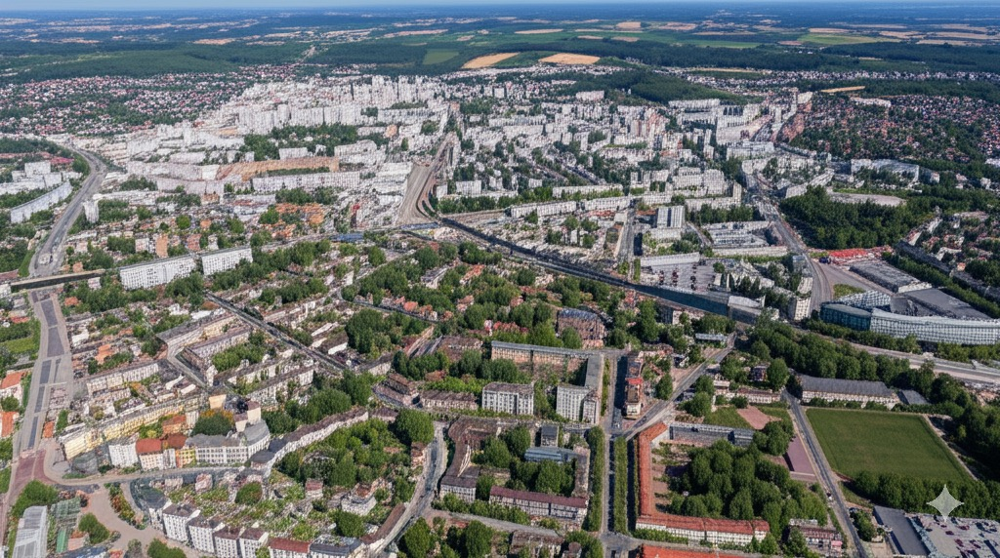

정밀 정사영상 제작
다한지리정보(주)는 최첨단 기술을 활용하여 고품질의 정밀 정사영상을 제작합니다. 항공 사진, 드론 촬영 등 다양한 방법으로 데이터를 수집하고, 전문적인 기술력을 바탕으로 오차를 최소화하여 정확한 지리 정보를 제공합니다.
GIS 활성화 선두 업체
다한지리정보(주)는 최첨단 기술을 활용하여 고품질의 정밀 정사영상을 제작합니다. 항공 사진, 드론 촬영 등 다양한 방법으로 데이터를 수집하고, 전문적인 기술력을 바탕으로 오차를 최소화하여 정확한 지리 정보를 제공합니다.